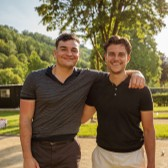
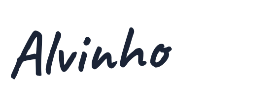

I
01
Je eigen Senaat
Een vaste groep ondernemers die jouw context kent. Daardoor hoef je niet iedere keer vanaf nul uit te leggen wat er speelt voordat het interessante gesprek begint.
Je liet je gegevens achter bij Aquila. Dus voordat we je bellen, wilden we eerst een ding uitzoeken: waarom zou iemand als jij eigenlijk bij Aquila passen? Dit is wat ons opviel.
Een tweede vestiging. Nieuwe mensen. Een naam die steeds steviger staat in de regio. Nordveld is voorbij de fase waarin je vooral probeert iets van de grond te krijgen.
Je bent aan het bouwen aan wat hierna komt. En precies daar wordt iets anders belangrijk. Het gaat dan niet meer alleen om je volgende stap, maar ook om met wie je hem bespreekt.
Je opende dit jaar een tweede locatie. Terwijl genoeg ondernemers in een onzekere markt liever even afwachten, breid jij uit.
Nordveld opent tweede vestiging om de groei in de regio op te vangen.
De afgelopen periode kwamen er meerdere mensen bij, onder andere een werkvoorbereider en een projectleider. Dat zegt iets. Je organiseert Nordveld niet voor hoe het bedrijf vandaag is, maar voor waar je naartoe wilt.
Drie nieuwe vacatures, waaronder een werkvoorbereider en een projectleider.
Er staat geen mede-DGA naast je, geen compagnon die automatisch dezelfde belangen, risico's en verantwoordelijkheid draagt. Je kunt mensen om advies vragen, maar de beslissing blijft van jou.
Nordveld Bouwgroep B.V., enig aandeelhouder en bestuurder.
Met wie bespreek jij de dingen die je niet met je team kunt bespreken? Hoe hoger je klimt, hoe kleiner de kring van mensen die werkelijk begrijpen wat er op tafel ligt. Aquila bouwt precies die kring.
Zal ik je uitnodigen voor een kennismaking?
Vijftien minuten, vrijblijvend. We kijken eerst samen of het überhaupt past.
Of en we bellen je.
Binnen Aquila zit je met ondernemers die zelf iets serieus hebben opgebouwd. Dit zijn drie leden die instapten met vraagstukken die opvallend dicht bij die van jou lagen. Kies er een en lees zijn verhaal.
We gebruiken namen van leden alleen met hun akkoord. Tijdens een kennismaking vertellen we je meer over wie er binnen Aquila zitten.
Je hebt waarschijnlijk genoeg mensen om je heen. Een accountant voor de cijfers. Medewerkers die hun vak kennen. Misschien andere ondernemers die je af en toe spreekt. Maar naarmate Nordveld groeit, ontstaan er vragen waarvoor dat niet hetzelfde is.
Op dat niveau wil je niet méér meningen. Je wilt een paar goede mensen die begrijpen wat er op het spel staat.
Een vaste groep ondernemers. Ze kennen jou. Ze kennen Nordveld. Ze weten welke keuzes eraan voorafgingen en kunnen je dus ook aanspreken als je jezelf voor de gek houdt. Ze hebben geen belang in jouw bedrijf, wel ervaring met de problemen waar jij tegenaan loopt.
Dat noemen we binnen Aquila je Senaat.
Aquila brengt ondernemers bij elkaar die iets hebben opgebouwd en bereid zijn daar open over te praten. Je komt er niet om zoveel mogelijk mensen te ontmoeten. Je komt er om de juiste mensen vaak genoeg te spreken dat er echte scherpte ontstaat.
Misschien heb je minder goede ervaringen met netwerkclubs. Terecht. Dit is waar wij bewust van afwijken.
Een vaste groep ondernemers die jouw context kent. Daardoor hoef je niet iedere keer vanaf nul uit te leggen wat er speelt voordat het interessante gesprek begint.
Ondernemers uit onder andere bouw, techniek, handel en productie. Ze geven je praktijkantwoorden, in plaats van theorie vanaf de zijlijn.
Aquila werkt alleen als de mensen in de kamer bij elkaar passen. Daarom begint het niet met een lidmaatschap, maar met een gesprek.
Lang niet iedereen die binnen wil, komt er ook echt in. Het niveau van de groep staat voorop.
Wie alleen komt halen, past er niet. Openheid en wederkerigheid zijn de basis.
Gesprekken met ondernemers die de verantwoordelijkheid zelf kennen.
Aquila is geen agenda vol verplichte borrels. Het is een club die je opzoekt omdat het de moeite waard is. Sparren met gelijkgestemden, op de plekken waar het echte gesprek pas op gang komt.
Een paar dagen weg met leden. Wandelen, eten, praten. Daar ontstaan de gesprekken die op kantoor nooit komen, en de banden die daarna blijven.
Eén keer per jaar de bergen in. Ondernemen even opzij, de mensen erachter des te dichterbij.
Ondernemers en experts die delen wat werkte en wat niet. Concreet, uit de praktijk, zonder de gladde verhalen.
De vaste momenten waar het echte gesprek pas na de borrel begint. Kleine setting, hoog niveau, mensen die je jaar na jaar beter leert kennen.

Ik ben Alvinho. Samen met Jeff begon ik Aquila vanuit een simpele observatie: hoe groter het bedrijf wordt, hoe kleiner de groep mensen met wie je echt vrij kunt praten.
Je team kijkt naar jou. Adviseurs kijken vanuit hun vakgebied. Mensen thuis kennen jou, maar niet altijd de wereld waarin je iedere dag beslissingen neemt. Dus wilden we een plek bouwen waar ondernemers elkaar wél begrijpen.
Het moest geen netwerkclub worden, maar een kring waarin je kunt zeggen wat er werkelijk speelt, en waar de mensen tegenover je genoeg hebben meegemaakt om daar iets zinnigs over terug te zeggen. Daarom maakten we deze pagina ook niet voor ondernemers in het algemeen. We maakten hem voor jou.

Alvinho & Jeff, oprichters van Aquila
Dan laten we je zien wie er binnen Aquila zitten, hoe een Senaat werkt en waarom we dachten dat Nordveld interessant genoeg was om verder naar te kijken. Daarna weet jij waarschijnlijk vrij snel of dit jouw soort mensen zijn.
Liever eerst iets vragen? Mail Alvinho.